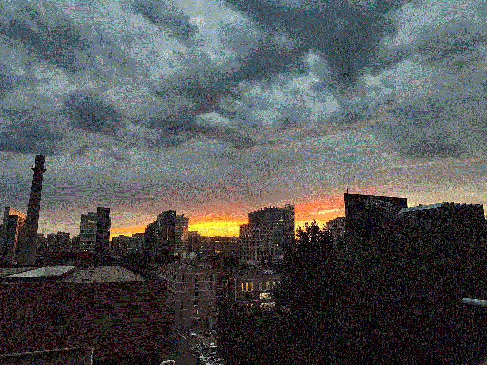

<!DOCTYPE html>

<html lang="en">
    <head>
        <meta charset="UTF-8">
        <meta name="viewport" content="width = device-width, initial-scale = 1.0">
        <meta http-equiv="X-UA-Compatible" content="ie=edge">
        <title>Wang-Wei Yu</title>
        <!-- reset -->
        <link rel="stylesheet" href="./css/reset.css">
        <!-- public -->
        <link rel="stylesheet" href="./css/base.css">
        <!-- current -->
        <link rel="stylesheet" href="./css/publications.css">
        <!-- portrait -->
        <link rel="icon" href="./pic/favicon.ico">
        <!-- Js -->
        <script src="./js/app.js"></script>
        <script src="https://polyfill.io/v3/polyfill.min.js?features=es6"></script>
        <script id="MathJax-script" async src="https://cdn.jsdelivr.net/npm/mathjax@3/es5/tex-mml-chtml.js"></script>
</html>

<body>
    <div class="topbar-wrapper">
        <div class="topbar w clearfix">
            <nav class="nav-button">
                <div class="bg"></div>
                <button class="button"></button>
            </nav>
            <ul class="service">
                <li><a href="./index.html">Wang-Wei Yu</a></li>
            </ul>

            <ul class="service1">
                <li><a href="./me.html">About Me</a></li>
                <li class="line">|</li>
                <li><a href="./CV.html">CV</a></li>
                <li class="line">|</li>
                <li><a href="./reseach.html">Reseach</a></li>
                <li class="line">|</li>
                <li><a id="current" href="./publications.html">Publications</a></li>
                <li class="line">|</li>
                <li><a href="./seminars.html">Seminars</a></li>
            </ul>
        </div>
    </div>

    <div class="webcover w">
        
    </div>


    <div class="window"> 
        <div class="fp clearfix">
        
            <p>You can find my <i>research papers</i> in <a href="https://inspirehep.net/authors/1894600?ui-citation-summary=true">Inspire</a>.
            </p>

            <p>
                <li> <b>Wang-Wei Yu</b>, Li Li & Shao-Jiang Wang 
                    <i> First detection of the Hubble variation correlation and its scale dependence</i> 
                    <!-- accepted by <a href="https://journals.aps.org/prd/">Phys. Rev. D </a> -->
                    <a href="https://arxiv.org/abs/2209.14732">[arXiv:2209.14732]
                    </a>

                </li>

                <li> Rong-Gen Cai, Zong-Kuan Guo, Shao-Jiang Wang, <b>Wang-Wei Yu</b>  & Yong Zhou 
                    <i> No-go guide for late-time solutions to the Hubble tension: Matter perturbations</i> 
                    <a href="https://journals.aps.org/prd/abstract/10.1103/PhysRevD.106.063519">Phys. Rev. D 106, 063519 </a>
                    <a href="https://arxiv.org/abs/2202.12214">[arXiv:2202.12214]
                    </a>

                </li>

                <li> Rong-Gen Cai, Chengjie Fu & <b>Wang-Wei Yu</b> 
                    <i>Parity violation in stochastic gravitational wave background from inflation in Nieh-Yan modified teleparallel gravity</i> 
                    <a href="https://journals.aps.org/prd/abstract/10.1103/PhysRevD.105.103520">Phys. Rev. D 105, 103520 </a>
                    <a href="https://arxiv.org/abs/2112.04794">[arXiv:2112.04794]
                    </a>
                    
                </li>
           

            <li> Rong-Gen Cai, Zong-Kuan Guo, Shao-Jiang Wang, <b>Wang-Wei Yu</b>  & Yong Zhou 
                <i> No-go guide for the Hubble tension: Late-time solutions</i> 
                <a href="https://journals.aps.org/prd/abstract/10.1103/PhysRevD.105.L021301">Phys. Rev. D 105, L021301 </a>
                <a href="https://arxiv.org/abs/2107.13286">[arXiv:2107.13286]
                </a>

            </li>

            <li> Rong-Gen Cai, Zong-Kuan Guo, Li Li, Shao-Jiang Wang, & <b>Wang-Wei Yu</b>
                <i> Chameleon dark energy can resolve the Hubble tension</i> 
                <a href="https://journals.aps.org/prd/abstract/10.1103/PhysRevD.103.L121302">Phys. Rev. D 103, L121302 </a>
                <a href="https://arxiv.org/abs/2102.02020">[arXiv:2102.02020]
                </a>

            </li>

            <li> Rong-Gen Cai, Jia-Feng Ding, Zong-Kuan Guo, Shao-Jiang Wang, & <b>Wang-Wei Yu</b>
                <i> Do the observational data favor a local void?</i> 
                <a href="https://journals.aps.org/prd/abstract/10.1103/PhysRevD.103.123539">Phys. Rev. D 103, 123539 </a>
                <a href="https://arxiv.org/abs/2012.08292">[arXiv:2012.08292]
                </a>

            </li>
        </p>

            <p>I also write popular science article.</p>
            <li>路边的野餐与宇宙的盛宴, published by <a href="https://mp.weixin.qq.com/s?__biz=MzU0NjQyNTY4Mw==&mid=2247497341&idx=1&sn=8fa1301fb859aebcbffc549cb3e080ec&chksm=fb5f6841cc28e1575bfdcf0d65bbe10e345a51a024fff660314501f8b12d2eb202118a2ebfa0&scene=27">The wechat public account of ITP</a>, reprinted by <a href="https://baijiahao.baidu.com/s?id=1741731289075173047&wfr=spider&for=pc">返朴</a>, <a href="https://mp.weixin.qq.com/s?__biz=MjM5NzIyNDI1Mw==&mid=2651825425&idx=1&sn=ea890294fe627817eef24a6fe481b3a3&chksm=bd264f438a51c65567cd9361ebd4692ed1077b66dec2faa79aef20068cf6762d123f201c5fb2&scene=27">the voice of Chinese Academy of Sciences </a>
            and  <a href="https://mp.weixin.qq.com/s?__biz=MzIwNzg3NTM4Nw==&mid=2247497181&idx=1&sn=4194c7d304c36c66195e6547156304e5&chksm=97090989a07e809f882a37b04f51abcf57f852d43d547e27c5d3e3caac98cd0e0e6a01058731&scene=27">The wechat public account of <i>Mod Phys</i>  </a></li>
        
        </div>
    </div>

    <a style="display: none; font-size: 40px;" href = "javascript:;" class="backToTop" title="Back to Top" id="backToTop"> &#8682; </a>

</body>
